maftools : Summarize, Analyze and Visualize MAF Files
Anand Mayakonda
2020-08-22
Source:vignettes/maftools.Rmd
maftools.RmdIntroduction
With advances in Cancer Genomics, Mutation Annotation Format (MAF) is being widely accepted and used to store somatic variants detected. The Cancer Genome Atlas Project has sequenced over 30 different cancers with sample size of each cancer type being over 200. Resulting data consisting of somatic variants are stored in the form of Mutation Annotation Format. This package attempts to summarize, analyze, annotate and visualize MAF files in an efficient manner from either TCGA sources or any in-house studies as long as the data is in MAF format.
Citation
If you find this tool useful, please cite:
Mayakonda A, Lin DC, Assenov Y, Plass C, Koeffler HP. 2018. Maftools: efficient and comprehensive analysis of somatic variants in cancer. Genome Resarch PMID: 30341162
Generating MAF files
For VCF files or simple tabular files, easy option is to use vcf2maf utility which will annotate VCFs, prioritize transcripts, and generates an MAF. Recent updates to gatk has also enabled funcotator to genrate MAF files.
If you’re using ANNOVAR for variant annotations, maftools has a handy function
annovarToMaffor converting tabular annovar outputs to MAF.
MAF field requirements
MAF files contain many fields ranging from chromosome names to cosmic annotations. However most of the analysis in maftools uses following fields.
Mandatory fields: Hugo_Symbol, Chromosome, Start_Position, End_Position, Reference_Allele, Tumor_Seq_Allele2, Variant_Classification, Variant_Type and Tumor_Sample_Barcode.
Recommended optional fields: non MAF specific fields containing VAF (Variant Allele Frequecy) and amino acid change information.
Complete specification of MAF files can be found on NCI GDC documentation page.
This vignette demonstrates the usage and application of maftools on an example MAF file from TCGA LAML cohort 1.
Installation
if (!require("BiocManager")) install.packages("BiocManager") BiocManager::install("maftools")
Overview of the package
maftools functions can be categorized into mainly Visualization and Analysis modules. Each of these functions and a short description is summarized as shown below. Usage is simple, just read your MAF file with read.maf (along with copy-number data if available) and pass the resulting MAF object to the desired function for plotting or analysis.

Reading and summarizing maf files
Required input files
- an MAF file - can be gz compressed. Required.
- an optional but recommended clinical data associated with each sample/Tumor_Sample_Barcode in MAF.
- an optional copy number data if available. Can be GISTIC output or a custom table containing sample names, gene names and copy-number status (
AmporDel).
Reading MAF files.
read.maf function reads MAF files, summarizes it in various ways and stores it as an MAF object. Even though MAF file is alone enough, it is recommended to provide annotations associated with samples in MAF. One can also integrate copy number data if available.
library(maftools)
#path to TCGA LAML MAF file laml.maf = system.file('extdata', 'tcga_laml.maf.gz', package = 'maftools') #clinical information containing survival information and histology. This is optional laml.clin = system.file('extdata', 'tcga_laml_annot.tsv', package = 'maftools') laml = read.maf(maf = laml.maf, clinicalData = laml.clin)
## -Reading
## -Validating
## -Silent variants: 475
## -Summarizing
## -Processing clinical data
## -Finished in 0.327s elapsed (0.288s cpu)MAF object
Summarized MAF file is stored as an MAF object. MAF object contains main maf file, summarized data and any associated sample annotations.
There are accessor methods to access the useful slots from MAF object.
#Typing laml shows basic summary of MAF file. laml
## An object of class MAF
## ID summary Mean Median
## 1: NCBI_Build 37 NA NA
## 2: Center genome.wustl.edu NA NA
## 3: Samples 193 NA NA
## 4: nGenes 1241 NA NA
## 5: Frame_Shift_Del 52 0.269 0
## 6: Frame_Shift_Ins 91 0.472 0
## 7: In_Frame_Del 10 0.052 0
## 8: In_Frame_Ins 42 0.218 0
## 9: Missense_Mutation 1342 6.953 7
## 10: Nonsense_Mutation 103 0.534 0
## 11: Splice_Site 92 0.477 0
## 12: total 1732 8.974 9#Shows sample summry. getSampleSummary(laml) #Shows gene summary. getGeneSummary(laml) #shows clinical data associated with samples getClinicalData(laml) #Shows all fields in MAF getFields(laml) #Writes maf summary to an output file with basename laml. write.mafSummary(maf = laml, basename = 'laml')
Visualization
Plotting MAF summary.
We can use plotmafSummary to plot the summary of the maf file, which displays number of variants in each sample as a stacked barplot and variant types as a boxplot summarized by Variant_Classification.
plotmafSummary(maf = laml, rmOutlier = TRUE, addStat = 'median', dashboard = TRUE, titvRaw = FALSE)
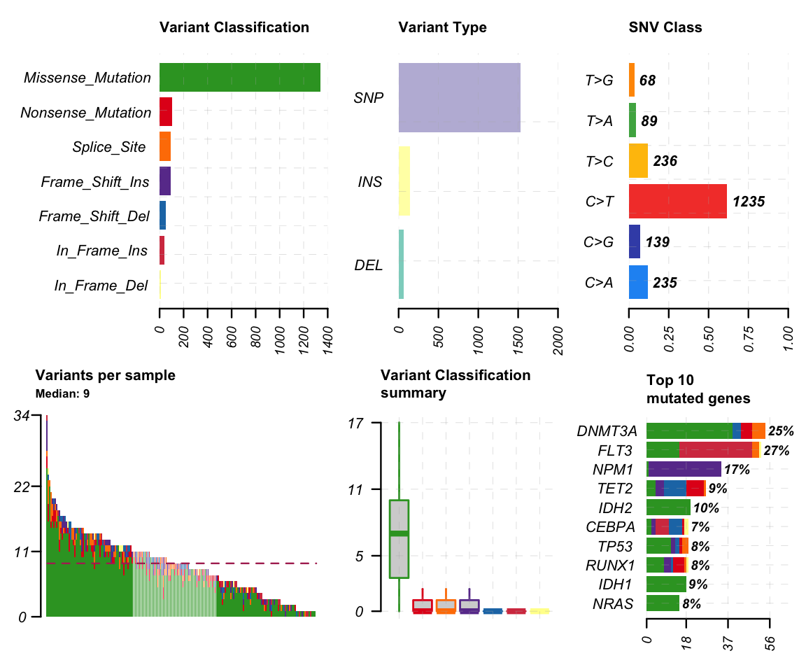
Oncoplots
Drawing oncoplots
Better representation of maf file can be shown as oncoplots, also known as waterfall plots.
#oncoplot for top ten mutated genes. oncoplot(maf = laml, top = 10)
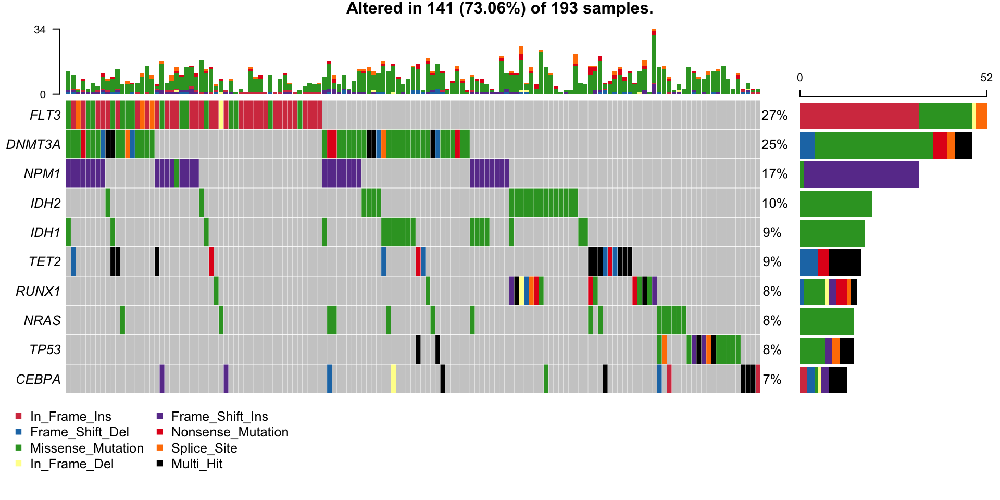
NOTE: Variants annotated as Multi_Hit are those genes which are mutated more than once in the same sample.
For more details on customisation see the Customizing oncoplots vignette.
Transition and Transversions.
titv function classifies SNPs into Transitions and Transversions and returns a list of summarized tables in various ways. Summarized data can also be visualized as a boxplot showing overall distribution of six different conversions and as a stacked barplot showing fraction of conversions in each sample.
laml.titv = titv(maf = laml, plot = FALSE, useSyn = TRUE) #plot titv summary plotTiTv(res = laml.titv)
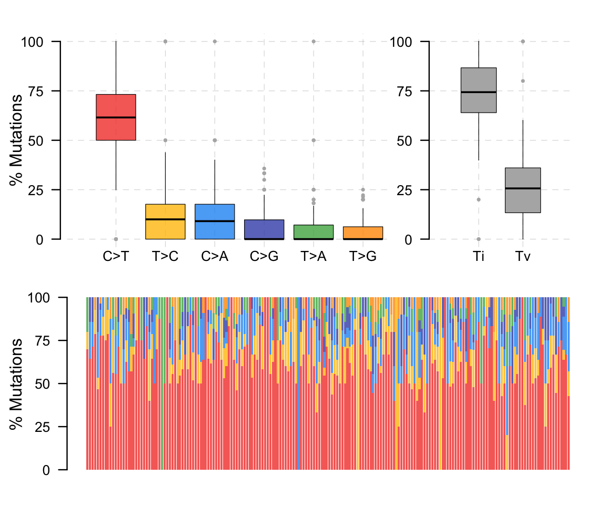
Lollipop plots for amino acid changes
lollipopPlot function requires us to have amino acid changes information in the maf file. However MAF files have no clear guidelines on naming the field for amino acid changes, with different studies having different field (or column) names for amino acid changes. By default, lollipopPlot looks for column AAChange, and if its not found in the MAF file, it prints all available fields with a warning message. For below example, MAF file contains amino acid changes under a field/column name ‘Protein_Change’. We will manually specify this using argument AACol.
#lollipop plot for DNMT3A, which is one of the most frequent mutated gene in Leukemia. lollipopPlot(maf = laml, gene = 'DNMT3A', AACol = 'Protein_Change', showMutationRate = TRUE)
## 3 transcripts available. Use arguments refSeqID or proteinID to manually specify tx name.## HGNC refseq.ID protein.ID aa.length
## 1: DNMT3A NM_175629 NP_783328 912
## 2: DNMT3A NM_022552 NP_072046 912
## 3: DNMT3A NM_153759 NP_715640 723## Using longer transcript NM_175629 for now.## Removed 3 mutations for which AA position was not available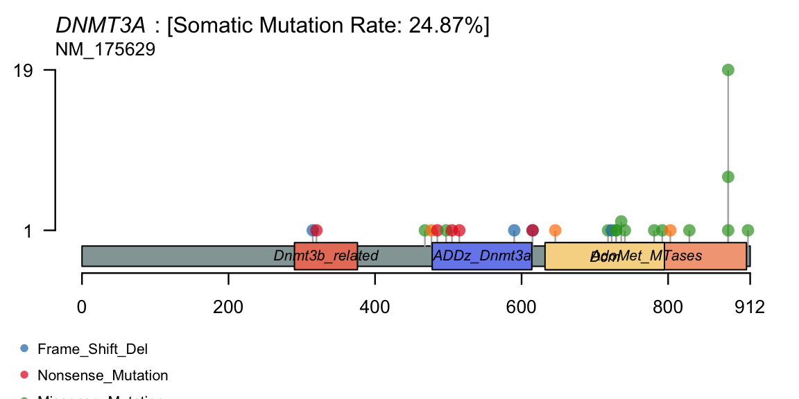
By default lollipopPlot uses the longest isoform of the gene.
Labelling points.
We can also label points on the lollipopPlot using argument labelPos. If labelPos is set to ‘all’, all of the points are highlighted.
lollipopPlot(maf = laml, gene = 'DNMT3A', showDomainLabel = FALSE, labelPos = 882)
## Assuming protein change information are stored under column Protein_Change. Use argument AACol to override if necessary.## 3 transcripts available. Use arguments refSeqID or proteinID to manually specify tx name.## HGNC refseq.ID protein.ID aa.length
## 1: DNMT3A NM_175629 NP_783328 912
## 2: DNMT3A NM_022552 NP_072046 912
## 3: DNMT3A NM_153759 NP_715640 723## Using longer transcript NM_175629 for now.## Removed 3 mutations for which AA position was not available
Rainfall plots
Cancer genomes, especially solid tumors are characterized by genomic loci with localized hyper-mutations 5. Such hyper mutated genomic regions can be visualized by plotting inter variant distance on a linear genomic scale. These plots generally called rainfall plots and we can draw such plots using rainfallPlot. If detectChangePoints is set to TRUE, rainfall plot also highlights regions where potential changes in inter-event distances are located.
brca <- system.file("extdata", "brca.maf.gz", package = "maftools") brca = read.maf(maf = brca, verbose = FALSE)
rainfallPlot(maf = brca, detectChangePoints = TRUE, pointSize = 0.6)
## Processing TCGA-A8-A08B..## Kataegis detected at:## Chromosome Start_Position End_Position nMuts Avg_intermutation_dist Size
## 1: 8 98129348 98133560 7 702.0000 4212
## 2: 8 98398549 98403536 9 623.3750 4987
## 3: 8 98453076 98456466 9 423.7500 3390
## 4: 8 124090377 124096810 22 306.3333 6433
## 5: 12 97436055 97439705 7 608.3333 3650
## 6: 17 29332072 29336153 8 583.0000 4081
## Tumor_Sample_Barcode C>G C>T
## 1: TCGA-A8-A08B 4 3
## 2: TCGA-A8-A08B 1 8
## 3: TCGA-A8-A08B 1 8
## 4: TCGA-A8-A08B 1 21
## 5: TCGA-A8-A08B 4 3
## 6: TCGA-A8-A08B 4 4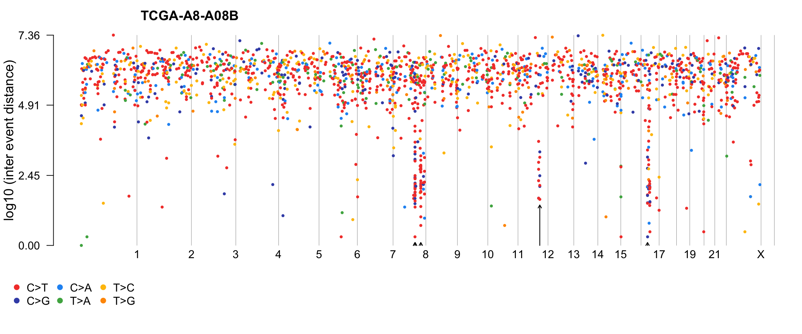
“Kataegis” are defined as those genomic segments containing six or more consecutive mutations with an average inter-mutation distance of less than or equal to 1,00 bp 5.
Compare mutation load against TCGA cohorts
tcgaCompare uses mutation load from TCGA MC3 for comparing muttaion burden against 33 TCGA cohorts. Plot generated is similar to the one described in Alexandrov et al 5.
laml.mutload = tcgaCompare(maf = laml, cohortName = 'Example-LAML')
## Warning in FUN(X[[i]], ...): Removed 1 samples with zero mutations.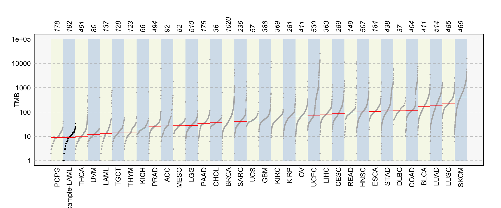
Plotting VAF
This function plots Variant Allele Frequencies as a boxplot which quickly helps to estimate clonal status of top mutated genes (clonal genes usually have mean allele frequency around ~50% assuming pure sample)
plotVaf(maf = laml, vafCol = 'i_TumorVAF_WU')
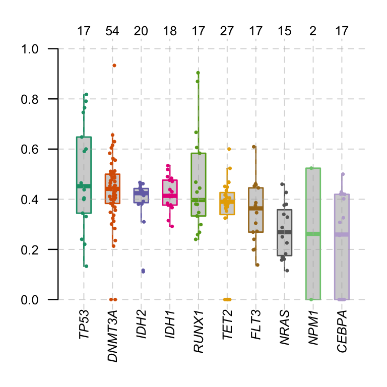
Processing copy-number data
Reading and summarizing gistic output files.
We can summarize output files generated by GISTIC programme. As mentioned earlier, we need four files that are generated by GISTIC, i.e, all_lesions.conf_XX.txt, amp_genes.conf_XX.txt, del_genes.conf_XX.txt and scores.gistic, where XX is the confidence level. See GISTIC documentation for details.
all.lesions <- system.file("extdata", "all_lesions.conf_99.txt", package = "maftools") amp.genes <- system.file("extdata", "amp_genes.conf_99.txt", package = "maftools") del.genes <- system.file("extdata", "del_genes.conf_99.txt", package = "maftools") scores.gis <- system.file("extdata", "scores.gistic", package = "maftools") laml.gistic = readGistic(gisticAllLesionsFile = all.lesions, gisticAmpGenesFile = amp.genes, gisticDelGenesFile = del.genes, gisticScoresFile = scores.gis, isTCGA = TRUE)
## -Processing Gistic files..
## --Processing amp_genes.conf_99.txt
## --Processing del_genes.conf_99.txt
## --Processing scores.gistic
## --Summarizing by samples#GISTIC object laml.gistic
## An object of class GISTIC
## ID summary
## 1: Samples 191
## 2: nGenes 2622
## 3: cytoBands 16
## 4: Amp 388
## 5: Del 26481
## 6: total 26869Similar to MAF objects, there are methods available to access slots of GISTIC object - getSampleSummary, getGeneSummary and getCytoBandSummary. Summarized results can be written to output files using function write.GisticSummary.
Visualizing gistic results.
There are three types of plots available to visualize gistic results.
oncoplot
This is similar to oncoplots except for copy number data. One can again sort the matrix according to annotations, if any. Below plot is the gistic results for LAML, sorted according to FAB classification. Plot shows that 7q deletions are virtually absent in M4 subtype where as it is widespread in other subtypes.
gisticOncoPlot(gistic = laml.gistic, clinicalData = getClinicalData(x = laml), clinicalFeatures = 'FAB_classification', sortByAnnotation = TRUE, top = 10)
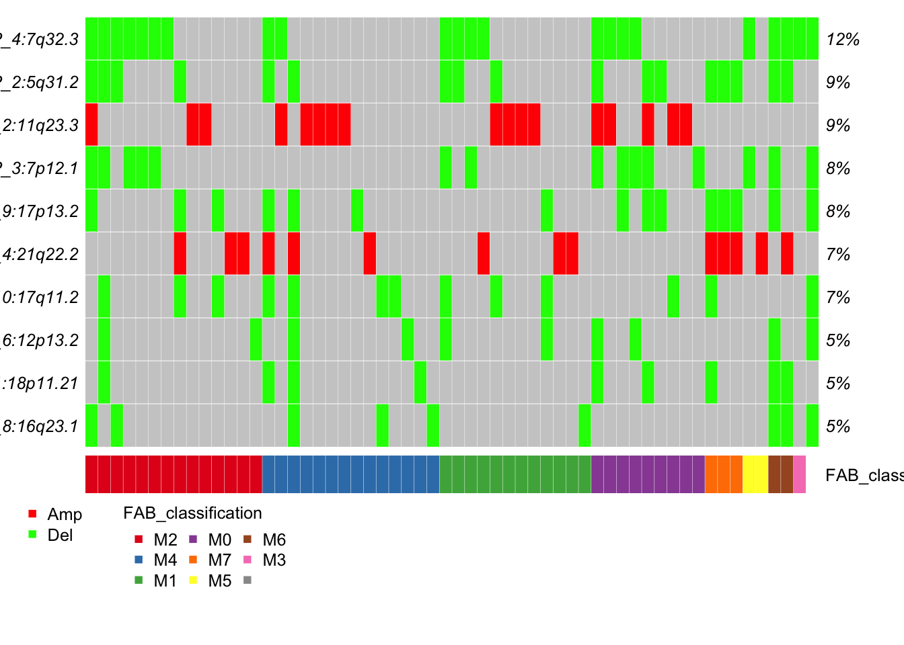
Visualizing CBS segments
tcga.ab.009.seg <- system.file("extdata", "TCGA.AB.3009.hg19.seg.txt", package = "maftools") plotCBSsegments(cbsFile = tcga.ab.009.seg)
## No 'tsb' specified, plot head 1 sample. Set tsb='ALL' to plot all samples.## NULL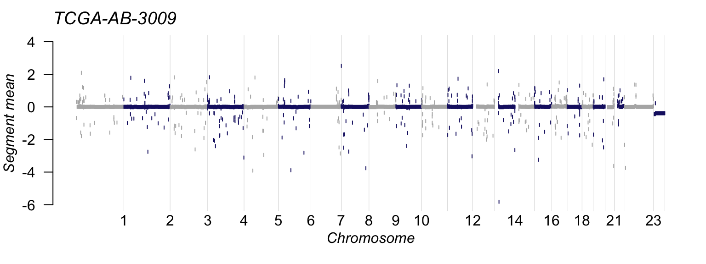
Analysis
Somatic Interactions
Mutually exclusive or co-occurring set of genes can be detected using somaticInteractions function, which performs pair-wise Fisher’s Exact test to detect such significant pair of genes.
#exclusive/co-occurance event analysis on top 10 mutated genes. somaticInteractions(maf = laml, top = 25, pvalue = c(0.05, 0.1))
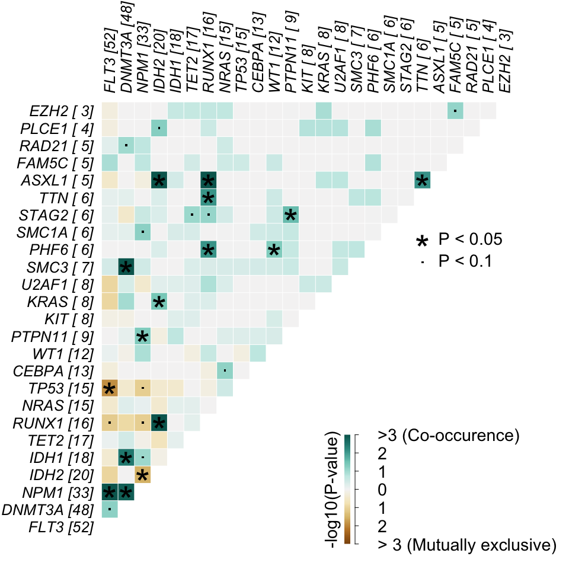
## gene1 gene2 pValue oddsRatio 00 11 01 10 Event
## 1: ASXL1 RUNX1 0.0001541586 55.215541 176 4 12 1 Co_Occurence
## 2: IDH2 RUNX1 0.0002809928 9.590877 164 7 9 13 Co_Occurence
## 3: IDH2 ASXL1 0.0004030636 41.077327 172 4 1 16 Co_Occurence
## 4: FLT3 NPM1 0.0009929836 3.763161 125 17 16 35 Co_Occurence
## 5: SMC3 DNMT3A 0.0010451985 20.177713 144 6 42 1 Co_Occurence
## ---
## 296: PLCE1 ASXL1 1.0000000000 0.000000 184 0 5 4 Mutually_Exclusive
## 297: RAD21 FAM5C 1.0000000000 0.000000 183 0 5 5 Mutually_Exclusive
## 298: PLCE1 FAM5C 1.0000000000 0.000000 184 0 5 4 Mutually_Exclusive
## 299: PLCE1 RAD21 1.0000000000 0.000000 184 0 5 4 Mutually_Exclusive
## 300: EZH2 PLCE1 1.0000000000 0.000000 186 0 4 3 Mutually_Exclusive
## pair event_ratio
## 1: ASXL1, RUNX1 4/13
## 2: IDH2, RUNX1 7/22
## 3: ASXL1, IDH2 4/17
## 4: FLT3, NPM1 17/51
## 5: DNMT3A, SMC3 6/43
## ---
## 296: ASXL1, PLCE1 0/9
## 297: FAM5C, RAD21 0/10
## 298: FAM5C, PLCE1 0/9
## 299: PLCE1, RAD21 0/9
## 300: EZH2, PLCE1 0/7Detecting cancer driver genes based on positional clustering
maftools has a function oncodrive which identifies cancer genes (driver) from a given MAF. oncodrive is a based on algorithm oncodriveCLUST which was originally implemented in Python. Concept is based on the fact that most of the variants in cancer causing genes are enriched at few specific loci (aka hot-spots). This method takes advantage of such positions to identify cancer genes. If you use this function, please cite OncodriveCLUST article 7.
laml.sig = oncodrive(maf = laml, AACol = 'Protein_Change', minMut = 5, pvalMethod = 'zscore')
## Warning in oncodrive(maf = laml, AACol = "Protein_Change", minMut = 5,
## pvalMethod = "zscore"): Oncodrive has been superseeded by OncodriveCLUSTL. See
## http://bg.upf.edu/group/projects/oncodrive-clust.phphead(laml.sig)
## Hugo_Symbol Frame_Shift_Del Frame_Shift_Ins In_Frame_Del In_Frame_Ins
## 1: IDH1 0 0 0 0
## 2: IDH2 0 0 0 0
## 3: NPM1 0 33 0 0
## 4: NRAS 0 0 0 0
## 5: U2AF1 0 0 0 0
## 6: KIT 1 1 0 1
## Missense_Mutation Nonsense_Mutation Splice_Site total MutatedSamples
## 1: 18 0 0 18 18
## 2: 20 0 0 20 20
## 3: 1 0 0 34 33
## 4: 15 0 0 15 15
## 5: 8 0 0 8 8
## 6: 7 0 0 10 8
## AlteredSamples clusters muts_in_clusters clusterScores protLen zscore
## 1: 18 1 18 1.0000000 414 5.546154
## 2: 20 2 20 1.0000000 452 5.546154
## 3: 33 2 32 0.9411765 294 5.093665
## 4: 15 2 15 0.9218951 189 4.945347
## 5: 8 1 7 0.8750000 240 4.584615
## 6: 8 2 9 0.8500000 976 4.392308
## pval fdr fract_muts_in_clusters
## 1: 1.460110e-08 1.022077e-07 1.0000000
## 2: 1.460110e-08 1.022077e-07 1.0000000
## 3: 1.756034e-07 8.194826e-07 0.9411765
## 4: 3.800413e-07 1.330144e-06 1.0000000
## 5: 2.274114e-06 6.367520e-06 0.8750000
## 6: 5.607691e-06 1.308461e-05 0.9000000We can plot the results using plotOncodrive.
plotOncodrive(res = laml.sig, fdrCutOff = 0.1, useFraction = TRUE)
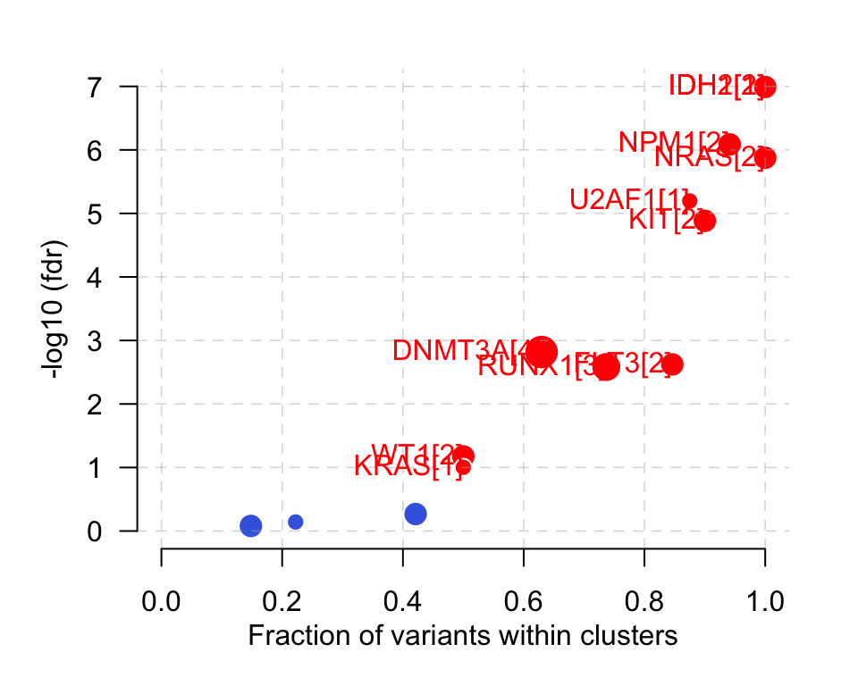
plotOncodrive plots the results as scatter plot with size of the points proportional to the number of clusters found in the gene. X-axis shows number of mutations (or fraction of mutations) observed in these clusters. In the above example, IDH1 has a single cluster and all of the 18 mutations are accumulated within that cluster, giving it a cluster score of one. For details on oncodrive algorithm, please refer to OncodriveCLUST article 7.
Adding and summarizing pfam domains
maftools comes with the function pfamDomains, which adds pfam domain information to the amino acid changes. pfamDomain also summarizes amino acid changes according to the domains that are affected. This serves the purpose of knowing what domain in given cancer cohort, is most frequently affected. This function is inspired from Pfam annotation module from MuSic tool 8.
laml.pfam = pfamDomains(maf = laml, AACol = 'Protein_Change', top = 10)
## Warning in pfamDomains(maf = laml, AACol = "Protein_Change", top = 10): Removed
## 50 mutations for which AA position was not available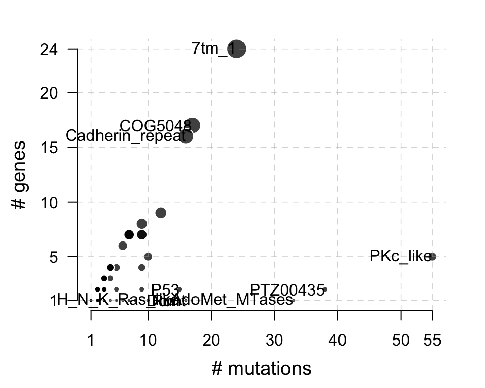
#Protein summary (Printing first 7 columns for display convenience) laml.pfam$proteinSummary[,1:7, with = FALSE]
## HGNC AAPos Variant_Classification N total fraction DomainLabel
## 1: DNMT3A 882 Missense_Mutation 27 54 0.5000000 AdoMet_MTases
## 2: IDH1 132 Missense_Mutation 18 18 1.0000000 PTZ00435
## 3: IDH2 140 Missense_Mutation 17 20 0.8500000 PTZ00435
## 4: FLT3 835 Missense_Mutation 14 52 0.2692308 PKc_like
## 5: FLT3 599 In_Frame_Ins 10 52 0.1923077 PKc_like
## ---
## 1512: ZNF646 875 Missense_Mutation 1 1 1.0000000 <NA>
## 1513: ZNF687 554 Missense_Mutation 1 2 0.5000000 <NA>
## 1514: ZNF687 363 Missense_Mutation 1 2 0.5000000 <NA>
## 1515: ZNF75D 5 Missense_Mutation 1 1 1.0000000 <NA>
## 1516: ZNF827 427 Frame_Shift_Del 1 1 1.0000000 <NA>#Domain summary (Printing first 3 columns for display convenience) laml.pfam$domainSummary[,1:3, with = FALSE]
## DomainLabel nMuts nGenes
## 1: PKc_like 55 5
## 2: PTZ00435 38 2
## 3: AdoMet_MTases 33 1
## 4: 7tm_1 24 24
## 5: COG5048 17 17
## ---
## 499: ribokinase 1 1
## 500: rim_protein 1 1
## 501: sigpep_I_bact 1 1
## 502: trp 1 1
## 503: zf-BED 1 1Survival analysis
Survival analysis is an essential part of cohort based sequencing projects. Function mafSurvive performs survival analysis and draws kaplan meier curve by grouping samples based on mutation status of user defined gene(s) or manually provided samples those make up a group. This function requires input data to contain Tumor_Sample_Barcode (make sure they match to those in MAF file), binary event (1/0) and time to event.
Our annotation data already contains survival information and in case you have survival data stored in a separate table provide them via argument clinicalData
Mutation in any given genes
#Survival analysis based on grouping of DNMT3A mutation status mafSurvival(maf = laml, genes = 'DNMT3A', time = 'days_to_last_followup', Status = 'Overall_Survival_Status', isTCGA = TRUE)
## Looking for clinical data in annoatation slot of MAF..## Number of mutated samples for given genes:## DNMT3A
## 48## Removed 11 samples with NA's## Median survival..## Group medianTime N
## 1: Mutant 245 45
## 2: WT 396 137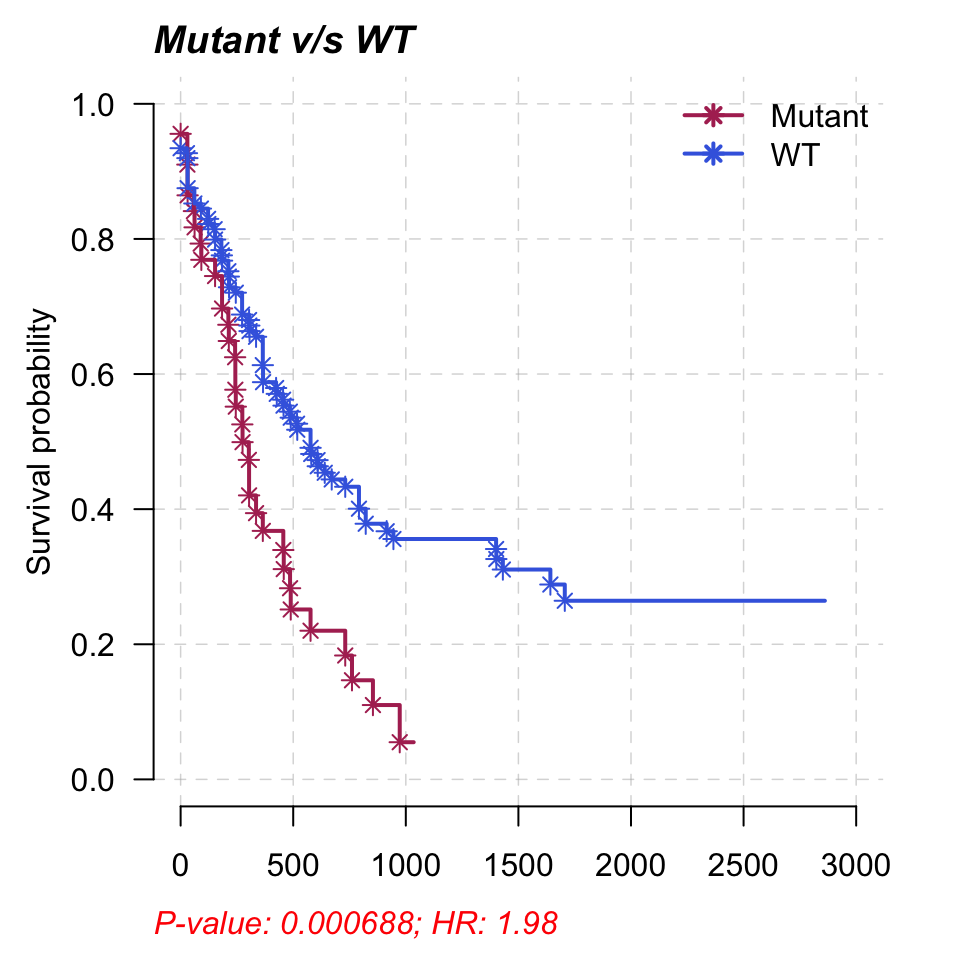
Predict genesets associated with survival
Identify set of genes which results in poor survival
#Using top 20 mutated genes to identify a set of genes (of size 2) to predict poor prognostic groups prog_geneset = survGroup(maf = laml, top = 20, geneSetSize = 2, time = "days_to_last_followup", Status = "Overall_Survival_Status", verbose = FALSE)
## Removed 11 samples with NA'sprint(prog_geneset)
## Gene_combination P_value hr WT Mutant
## 1: FLT3_DNMT3A 0.00104 2.510 164 18
## 2: DNMT3A_SMC3 0.04880 2.220 176 6
## 3: DNMT3A_NPM1 0.07190 1.720 166 16
## 4: DNMT3A_TET2 0.19600 1.780 176 6
## 5: FLT3_TET2 0.20700 1.860 177 5
## 6: NPM1_IDH1 0.21900 0.495 176 6
## 7: DNMT3A_IDH1 0.29300 1.500 173 9
## 8: IDH2_RUNX1 0.31800 1.580 176 6
## 9: FLT3_NPM1 0.53600 1.210 165 17
## 10: DNMT3A_IDH2 0.68000 0.747 178 4
## 11: DNMT3A_NRAS 0.99200 0.986 178 4Above results show a combination (N = 2) of genes which are associated with poor survival (P < 0.05). We can draw KM curve for above results with the function mafSurvGroup
mafSurvGroup(maf = laml, geneSet = c("DNMT3A", "FLT3"), time = "days_to_last_followup", Status = "Overall_Survival_Status")
## Looking for clinical data in annoatation slot of MAF..## Removed 11 samples with NA's## Median survival..## Group medianTime N
## 1: Mutant 242.5 18
## 2: WT 379.5 164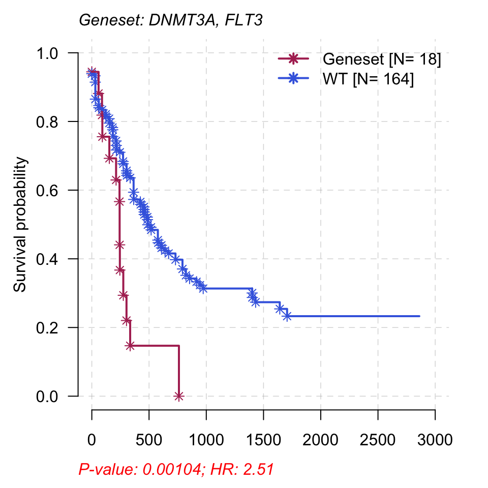
Comparing two cohorts (MAFs)
Cancers differ from each other in terms of their mutation pattern. We can compare two different cohorts to detect such differentially mutated genes. For example, recent article by Madan et. al 9, have shown that patients with relapsed APL (Acute Promyelocytic Leukemia) tends to have mutations in PML and RARA genes, which were absent during primary stage of the disease. This difference between two cohorts (in this case primary and relapse APL) can be detected using function mafComapre, which performs fisher test on all genes between two cohorts to detect differentially mutated genes.
#Primary APL MAF primary.apl = system.file("extdata", "APL_primary.maf.gz", package = "maftools") primary.apl = read.maf(maf = primary.apl) #Relapse APL MAF relapse.apl = system.file("extdata", "APL_relapse.maf.gz", package = "maftools") relapse.apl = read.maf(maf = relapse.apl)
#Considering only genes which are mutated in at-least in 5 samples in one of the cohort to avoid bias due to genes mutated in single sample. pt.vs.rt <- mafCompare(m1 = primary.apl, m2 = relapse.apl, m1Name = 'Primary', m2Name = 'Relapse', minMut = 5) print(pt.vs.rt)
## $results
## Hugo_Symbol Primary Relapse pval or ci.up ci.low
## 1: PML 1 11 1.529935e-05 0.03537381 0.2552937 0.000806034
## 2: RARA 0 7 2.574810e-04 0.00000000 0.3006159 0.000000000
## 3: RUNX1 1 5 1.310500e-02 0.08740567 0.8076265 0.001813280
## 4: FLT3 26 4 1.812779e-02 3.56086275 14.7701728 1.149009169
## 5: ARID1B 5 8 2.758396e-02 0.26480490 0.9698686 0.064804160
## 6: WT1 20 14 2.229087e-01 0.60619329 1.4223101 0.263440988
## 7: KRAS 6 1 4.334067e-01 2.88486293 135.5393108 0.337679367
## 8: NRAS 15 4 4.353567e-01 1.85209500 8.0373994 0.553883512
## 9: ARID1A 7 4 7.457274e-01 0.80869223 3.9297309 0.195710173
## adjPval
## 1: 0.0001376942
## 2: 0.0011586643
## 3: 0.0393149868
## 4: 0.0407875250
## 5: 0.0496511201
## 6: 0.3343630535
## 7: 0.4897762916
## 8: 0.4897762916
## 9: 0.7457273717
##
## $SampleSummary
## Cohort SampleSize
## 1: Primary 124
## 2: Relapse 58Forest plots
Above results show two genes PML and RARA which are highly mutated in Relapse APL compared to Primary APL. We can visualize these results as a forestplot.
forestPlot(mafCompareRes = pt.vs.rt, pVal = 0.1, color = c('royalblue', 'maroon'), geneFontSize = 0.8)
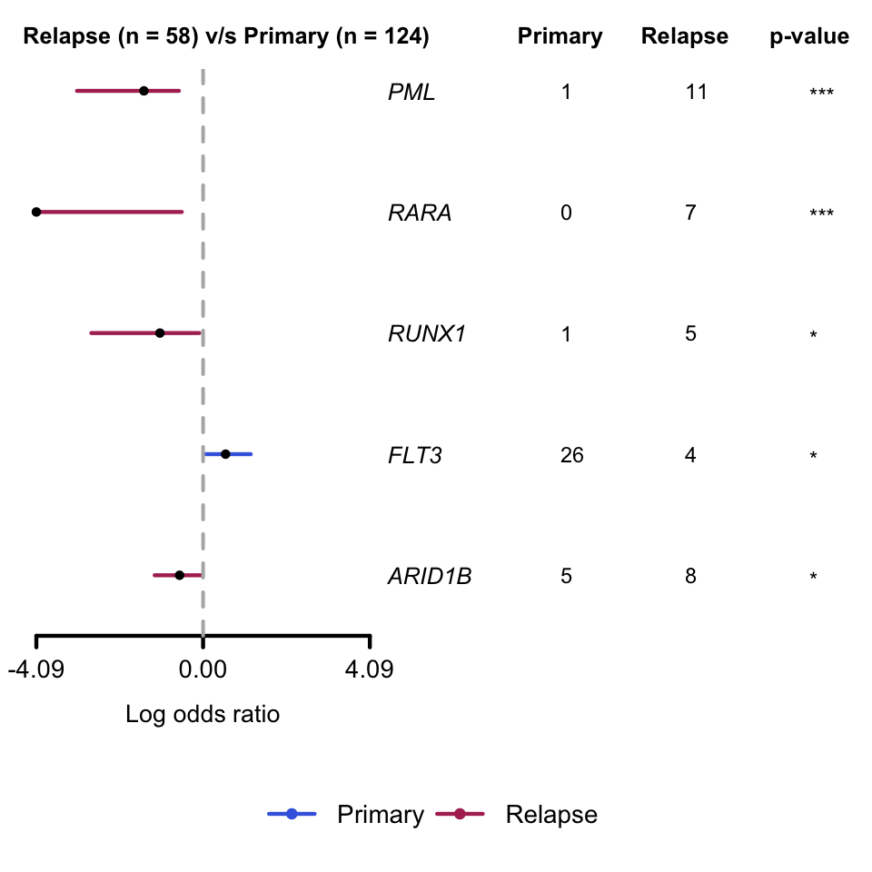
Co-onco plots
Another alternative way of displaying above results is by plotting two oncoplots side by side. coOncoplot function takes two maf objects and plots them side by side for better comparison.
genes = c("PML", "RARA", "RUNX1", "ARID1B", "FLT3") coOncoplot(m1 = primary.apl, m2 = relapse.apl, m1Name = 'PrimaryAPL', m2Name = 'RelapseAPL', genes = genes, removeNonMutated = TRUE)
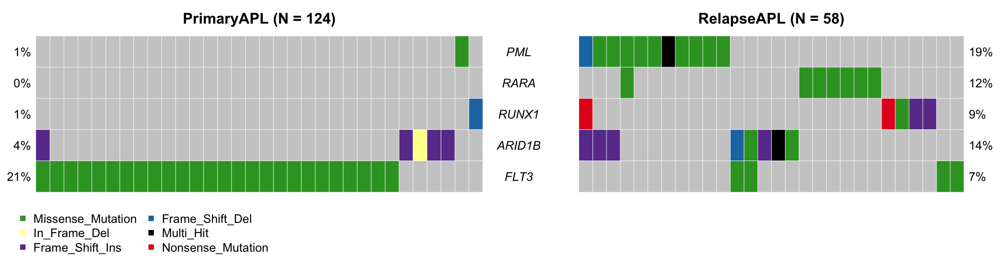
Co-bar plots
coBarplot(m1 = primary.apl, m2 = relapse.apl, m1Name = "Primary", m2Name = "Relapse")
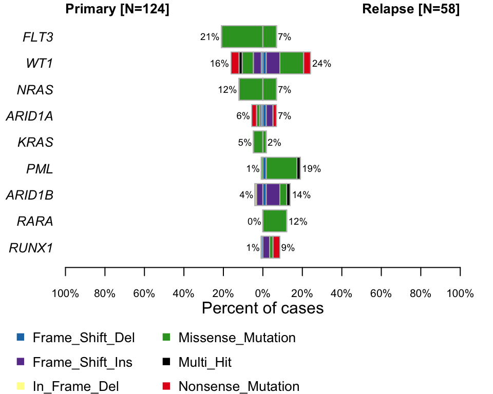
Lollipop plot-2
Along with plots showing cohort wise differences, its also possible to show gene wise differences with lollipopPlot2 function.
lollipopPlot2(m1 = primary.apl, m2 = relapse.apl, gene = "PML", AACol1 = "amino_acid_change", AACol2 = "amino_acid_change", m1_name = "Primary", m2_name = "Relapse")
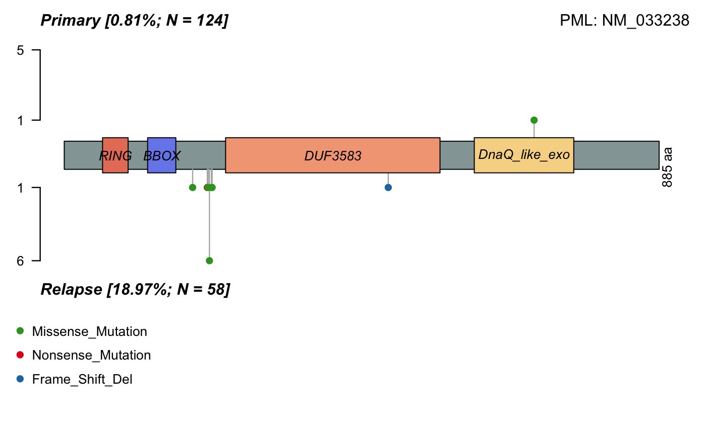
Clinical enrichment analysis
clinicalEnrichment is another function which takes any clinical feature associated with the samples and performs enrichment analysis. It performs various groupwise and pairwise comparisions to identify enriched mutations for every category within a clincila feature. Below is an example to identify mutations associated with FAB_classification.
fab.ce = clinicalEnrichment(maf = laml, clinicalFeature = 'FAB_classification')
## Sample size per factor in FAB_classification:##
## M0 M1 M2 M3 M4 M5 M6 M7
## 19 44 44 21 39 19 3 3#Results are returned as a list. Significant associations p-value < 0.05 fab.ce$groupwise_comparision[p_value < 0.05]
## Hugo_Symbol Group1 Group2 n_mutated_group1 n_mutated_group2 p_value
## 1: IDH1 M1 Rest 11 of 44 7 of 149 0.0002597371
## 2: TP53 M7 Rest 3 of 3 12 of 190 0.0003857187
## 3: DNMT3A M5 Rest 10 of 19 38 of 174 0.0057610493
## 4: CEBPA M2 Rest 7 of 44 6 of 149 0.0117352110
## 5: RUNX1 M0 Rest 5 of 19 11 of 174 0.0117436825
## 6: NPM1 M5 Rest 7 of 19 26 of 174 0.0248582372
## 7: CEBPA M1 Rest 6 of 44 7 of 149 0.0478737468
## OR_low OR_high fdr
## 1: 0 0.3926994 0.0308575
## 2: 0 0.1315271 0.0308575
## 3: 0 0.6406007 0.3072560
## 4: 0 0.6874270 0.3757978
## 5: 0 0.6466787 0.3757978
## 6: 0 0.8342897 0.6628863
## 7: 0 0.9869971 1.0000000Above results shows IDH1 mutations are enriched in M1 subtype of leukemia compared to rest of the cohort. Similarly DNMT3A is in M5, RUNX1 is in M0, and so on. These are well known results and this function effectively recaptures them. One can use any sort of clincial feature to perform such an analysis. There is also a small function - plotEnrichmentResults which can be used to plot these results.
plotEnrichmentResults(enrich_res = fab.ce, pVal = 0.05)
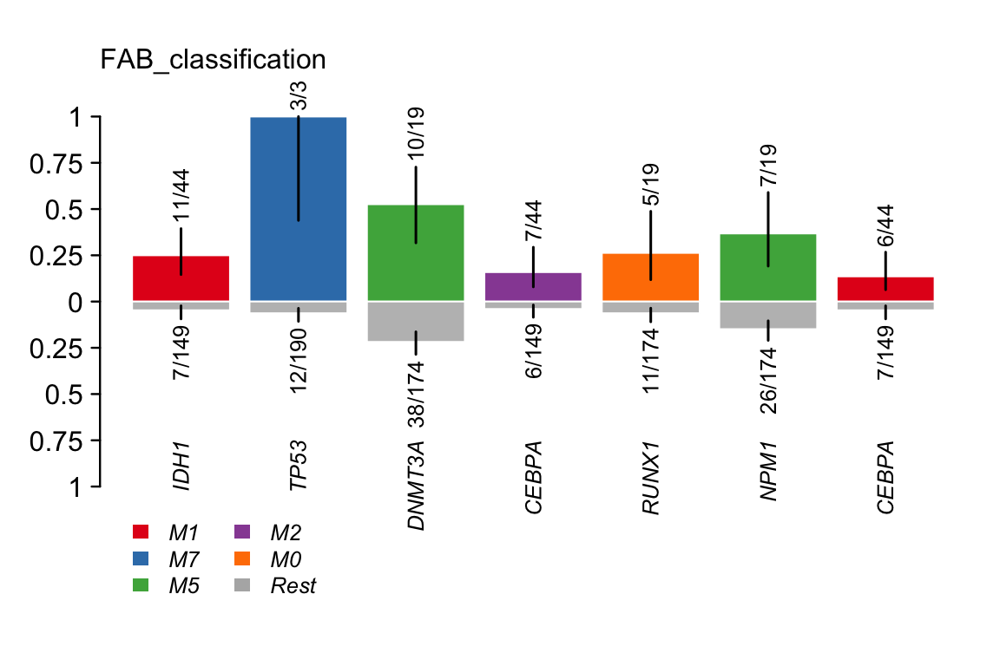
Drug-Gene Interactions
drugInteractions function checks for drug–gene interactions and gene druggability information compiled from Drug Gene Interaction database.
dgi = drugInteractions(maf = laml, fontSize = 0.75)
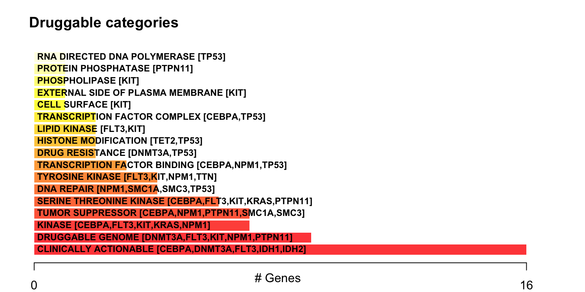
Above plot shows potential druggable gene categories along with upto top 5 genes involved in them. One can also extract information on drug-gene interactions. For example below is the results for known/reported drugs to interact with DNMT3A.
dnmt3a.dgi = drugInteractions(genes = "DNMT3A", drugs = TRUE)
## Number of claimed drugs for given genes:
## Gene N
## 1: DNMT3A 7#Printing selected columns. dnmt3a.dgi[,.(Gene, interaction_types, drug_name, drug_claim_name)]
## Gene interaction_types drug_name drug_claim_name
## 1: DNMT3A N/A
## 2: DNMT3A DAUNORUBICIN Daunorubicin
## 3: DNMT3A DECITABINE Decitabine
## 4: DNMT3A IDARUBICIN IDARUBICIN
## 5: DNMT3A DECITABINE DECITABINE
## 6: DNMT3A inhibitor DECITABINE CHEMBL1201129
## 7: DNMT3A inhibitor AZACITIDINE CHEMBL1489Please cite DGIdb article if you find this function useful 10.
Disclaimer: Resources used in this function are intended for purely research purposes. It should not be used for emergencies or medical or professional advice.
Oncogenic Signaling Pathways
OncogenicPathways function checks for enrichment of known Oncogenic Signaling Pathways in TCGA cohorts 11.
OncogenicPathways(maf = laml)
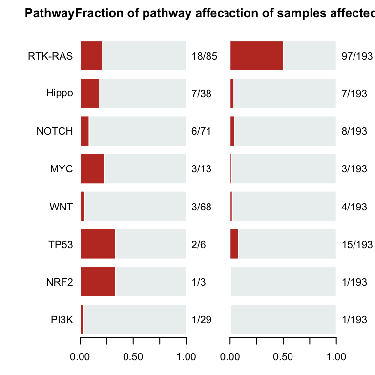
## Pathway N n_affected_genes fraction_affected Mutated_samples
## 1: PI3K 29 1 0.03448276 1
## 2: NRF2 3 1 0.33333333 1
## 3: TP53 6 2 0.33333333 15
## 4: WNT 68 3 0.04411765 4
## 5: MYC 13 3 0.23076923 3
## 6: NOTCH 71 6 0.08450704 8
## 7: Hippo 38 7 0.18421053 7
## 8: RTK-RAS 85 18 0.21176471 97
## Fraction_mutated_samples
## 1: 0.005181347
## 2: 0.005181347
## 3: 0.077720207
## 4: 0.020725389
## 5: 0.015544041
## 6: 0.041450777
## 7: 0.036269430
## 8: 0.502590674Its also possible to visualize complete pathway.
PlotOncogenicPathways(maf = laml, pathways = "RTK-RAS")
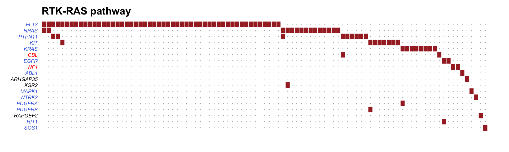
Tumor suppressor genes are in red, and oncogenes are in blue font.
Tumor heterogeneity and MATH scores
Heterogeneity in tumor samples
Tumors are generally heterogeneous i.e, consist of multiple clones. This heterogeneity can be inferred by clustering variant allele frequencies. inferHeterogeneity function uses vaf information to cluster variants (using mclust), to infer clonality. By default, inferHeterogeneity function looks for column t_vaf containing vaf information. However, if the field name is different from t_vaf, we can manually specify it using argument vafCol. For example, in this case study vaf is stored under the field name i_TumorVAF_WU.
#Heterogeneity in sample TCGA.AB.2972 library("mclust")
## Package 'mclust' version 5.4.6
## Type 'citation("mclust")' for citing this R package in publications.tcga.ab.2972.het = inferHeterogeneity(maf = laml, tsb = 'TCGA-AB-2972', vafCol = 'i_TumorVAF_WU')
## Processing TCGA-AB-2972..print(tcga.ab.2972.het$clusterMeans)
## Tumor_Sample_Barcode cluster meanVaf
## 1: TCGA-AB-2972 2 0.4496571
## 2: TCGA-AB-2972 1 0.2454750
## 3: TCGA-AB-2972 outlier 0.3695000#Visualizing results plotClusters(clusters = tcga.ab.2972.het)
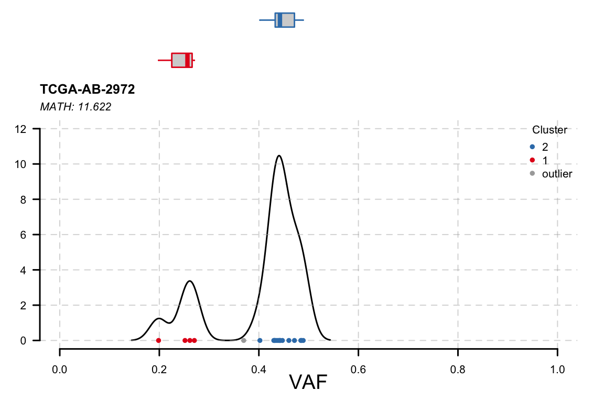
Above figure shows clear separation of two clones clustered at mean variant allele frequencies of ~45% (major clone) and another minor clone at variant allele frequency of ~25%.
Although clustering of variant allele frequencies gives us a fair idea on heterogeneity, it is also possible to measure the extent of heterogeneity in terms of a numerical value. MATH score (mentioned as a subtitle in above plot) is a simple quantitative measure of intra-tumor heterogeneity, which calculates the width of the vaf distribution. Higher MATH scores are found to be associated with poor outcome. MATH score can also be used a proxy variable for survival analysis 11.
Ignoring variants in copy number altered regions
We can use copy number information to ignore variants located on copy-number altered regions. Copy number alterations results in abnormally high/low variant allele frequencies, which tends to affect clustering. Removing such variants improves clustering and density estimation while retaining biologically meaningful results. Copy number information can be provided as a segmented file generated from segmentation programmes, such as Circular Binary Segmentation from “DNACopy” Bioconductor package 6.
seg = system.file('extdata', 'TCGA.AB.3009.hg19.seg.txt', package = 'maftools') tcga.ab.3009.het = inferHeterogeneity(maf = laml, tsb = 'TCGA-AB-3009', segFile = seg, vafCol = 'i_TumorVAF_WU')
## Processing TCGA-AB-3009..## Removed 1 variants with no copy number data.## Hugo_Symbol Chromosome Start_Position End_Position Tumor_Sample_Barcode
## 1: PHF6 23 133551224 133551224 TCGA-AB-3009
## t_vaf Segment_Start Segment_End Segment_Mean CN
## 1: 0.9349112 NA NA NA NA## Copy number altered variants:## Hugo_Symbol Chromosome Start_Position End_Position Tumor_Sample_Barcode
## 1: NFKBIL2 8 145668658 145668658 TCGA-AB-3009
## 2: NF1 17 29562981 29562981 TCGA-AB-3009
## 3: SUZ12 17 30293198 30293198 TCGA-AB-3009
## t_vaf Segment_Start Segment_End Segment_Mean CN cluster
## 1: 0.4415584 145232496 145760746 0.3976 2.634629 CN_altered
## 2: 0.8419000 29054355 30363868 -0.9157 1.060173 CN_altered
## 3: 0.8958333 29054355 30363868 -0.9157 1.060173 CN_altered#Visualizing results. Highlighting those variants on copynumber altered variants. plotClusters(clusters = tcga.ab.3009.het, genes = 'CN_altered', showCNvars = TRUE)
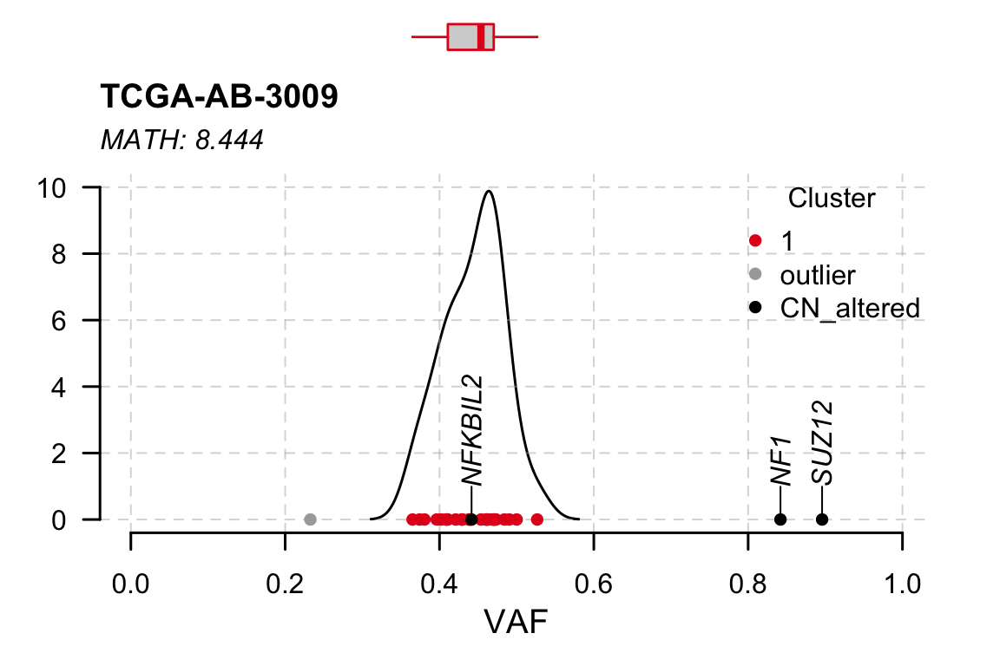
Above figure shows two genes NF1 and SUZ12 with high VAF’s, which is due to copy number alterations (deletion). Those two genes are ignored from analysis.
Mutational Signatures
Every cancer, as it progresses leaves a signature characterized by specific pattern of nucleotide substitutions. Alexandrov et.al have shown such mutational signatures, derived from over 7000 cancer samples 5. Such signatures can be extracted by decomposing matrix of nucleotide substitutions, classified into 96 substitution classes based on immediate bases surrounding the mutated base. Extracted signatures can also be compared to those validated signatures.
First step in signature analysis is to obtain the adjacent bases surrounding the mutated base and form a mutation matrix. NOTE: Earlier versions of maftools required a fasta file as an input. But starting from 1.8.0, BSgenome objects are used for faster sequence extraction.
#Requires BSgenome object library(BSgenome.Hsapiens.UCSC.hg19, quietly = TRUE)
##
## Attaching package: 'BiocGenerics'## The following objects are masked from 'package:parallel':
##
## clusterApply, clusterApplyLB, clusterCall, clusterEvalQ,
## clusterExport, clusterMap, parApply, parCapply, parLapply,
## parLapplyLB, parRapply, parSapply, parSapplyLB## The following objects are masked from 'package:stats':
##
## IQR, mad, sd, var, xtabs## The following objects are masked from 'package:base':
##
## anyDuplicated, append, as.data.frame, basename, cbind, colnames,
## dirname, do.call, duplicated, eval, evalq, Filter, Find, get, grep,
## grepl, intersect, is.unsorted, lapply, Map, mapply, match, mget,
## order, paste, pmax, pmax.int, pmin, pmin.int, Position, rank,
## rbind, Reduce, rownames, sapply, setdiff, sort, table, tapply,
## union, unique, unsplit, which, which.max, which.min##
## Attaching package: 'S4Vectors'## The following object is masked from 'package:base':
##
## expand.grid##
## Attaching package: 'Biostrings'## The following object is masked from 'package:base':
##
## strsplitlaml.tnm = trinucleotideMatrix(maf = laml, prefix = 'chr', add = TRUE, ref_genome = "BSgenome.Hsapiens.UCSC.hg19")
## Warning in trinucleotideMatrix(maf = laml, prefix = "chr", add = TRUE, ref_genome = "BSgenome.Hsapiens.UCSC.hg19"): Chromosome names in MAF must match chromosome names in reference genome.
## Ignorinig 101 single nucleotide variants from missing chromosomes chr23## -Extracting 5' and 3' adjacent bases
## -Extracting +/- 20bp around mutated bases for background C>T estimation
## -Estimating APOBEC enrichment scores
## --Performing one-way Fisher's test for APOBEC enrichment
## ---APOBEC related mutations are enriched in 3.315 % of samples (APOBEC enrichment score > 2 ; 6 of 181 samples)
## -Creating mutation matrix
## --matrix of dimension 188x96Above function performs two steps:
- Estimates APOBEC enrichment scores
- Prepares a mutational matrix for signature analysis.
APOBEC Enrichment estimation.
APOBEC induced mutations are more frequent in solid tumors and are mainly associated with C>T transition events occurring in TCW motif. APOBEC enrichment scores in the above command are estimated using the method described by Roberts et al 13. Briefly, enrichment of C>T mutations occurring within TCW motif over all of the C>T mutations in a given sample is compared to background Cytosines and TCWs occurring within 20bp of mutated bases.
\[\frac{n_{tCw} * background_C}{n_C * background_{TCW}}\]
One-sided fishers exact test is also performed to statistically evaluate the enrichment score, as described in original study by Roberts et al.
Differences between APOBEC enriched and non-enriched samples
We can also analyze the differences in mutational patterns between APOBEC enriched and non-APOBEC enriched samples. plotApobecDiff is a function which takes APOBEC enrichment scores estimated by trinucleotideMatrix and classifies samples into APOBEC enriched and non-APOBEC enriched. Once stratified, it compares these two groups to identify differentially altered genes.
Note that, LAML with no APOBEC enrichments, is not an ideal cohort for this sort of analysis and hence below plot is only for demonstration purpose.
plotApobecDiff(tnm = laml.tnm, maf = laml, pVal = 0.2)

## $results
## Hugo_Symbol Enriched nonEnriched pval or ci.up
## 1: TP53 2 13 0.08175632 5.9976455 46.608861
## 2: TET2 1 16 0.45739351 1.9407002 18.983979
## 3: FLT3 2 45 0.65523131 1.4081851 10.211621
## 4: DNMT3A 1 47 1.00000000 0.5335362 4.949499
## 5: ADAM11 0 2 1.00000000 0.0000000 164.191472
## ---
## 132: WAC 0 2 1.00000000 0.0000000 164.191472
## 133: WT1 0 12 1.00000000 0.0000000 12.690862
## 134: ZBTB33 0 2 1.00000000 0.0000000 164.191472
## 135: ZC3H18 0 2 1.00000000 0.0000000 164.191472
## 136: ZNF687 0 2 1.00000000 0.0000000 164.191472
## ci.low adjPval
## 1: 0.49875432 1
## 2: 0.03882963 1
## 3: 0.12341748 1
## 4: 0.01101929 1
## 5: 0.00000000 1
## ---
## 132: 0.00000000 1
## 133: 0.00000000 1
## 134: 0.00000000 1
## 135: 0.00000000 1
## 136: 0.00000000 1
##
## $SampleSummary
## Cohort SampleSize Mean Median
## 1: Enriched 6 7.167 6.5
## 2: nonEnriched 172 9.715 9.0Signature analysis
Signature analysis includes following steps.
-
estimateSignatures- which runs NMF on a range of values and measures the goodness of fit - in terms of Cophenetic correlation. -
plotCophenetic- which draws an elblow plot and helps you to decide optimal number of signatures. Best possible signature is the value at which Cophenetic correlation drops significantly. -
extractSignatures- uses non-negative matrix factorization to decompose the matrix intonsignatures.nis chosen based on the above two steps. In case if you already have a good estimate ofn, you can skip above two steps. -
compareSignatures- extracted signatures from above step can be compared to known signatures11 from COSMIC database, and cosine similarity is calculated to identify best match. -
plotSignatures- plots signatures
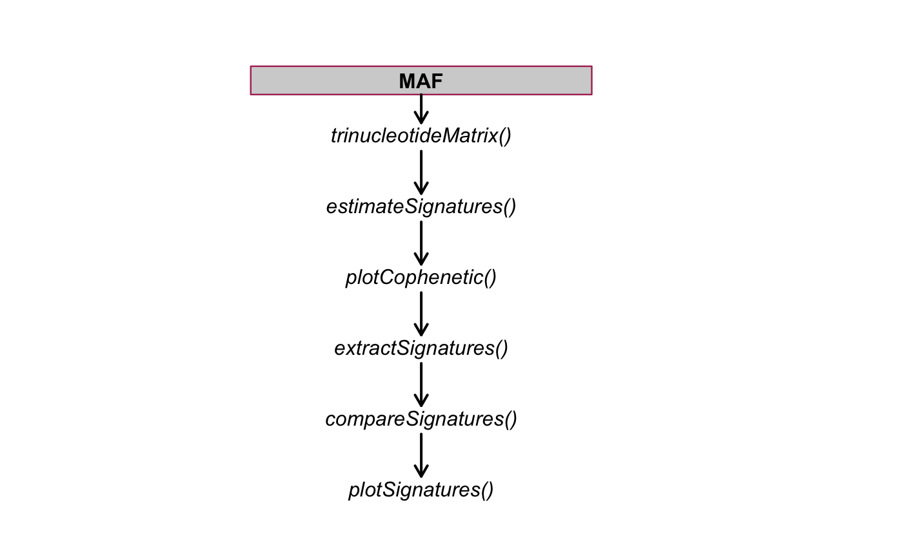
Note: In previous versions, extractSignatures used to take care of above steps automatically. After versions 2.2.0, main function is split inot above 5 stpes for user flexibility.
library('NMF') laml.sign = estimateSignatures(mat = laml.tnm, nTry = 6)
Draw elbow plot to visualize and decide optimal number of signatures from above results.
plotCophenetic(res = laml.sign)
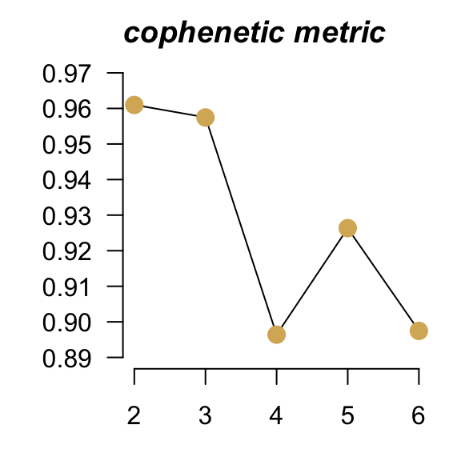
Best possible value is the one at which the correlation value on the y-axis drops significantly. In this case it appears to be at n = 3. LAML is not an ideal example for signature analysis with its low mutation rate, but for solid tumors with higher mutation burden one could expect more signatures, provided sufficient number of samples.
Once n is estimated, we can run the main function.
laml.sig = extractSignatures(mat = laml.tnm, n = 3)
## -Running NMF for factorization rank: 3## -Finished in2.528s elapsed (2.300s cpu)Compare detected signatures to COSMIC Legacy or SBS signature database.
#Compate against original 30 signatures laml.og30.cosm = compareSignatures(nmfRes = laml.sig, sig_db = "legacy")
## -Comparing against COSMIC signatures## ------------------------------------## --Found Signature_1 most similar to COSMIC_1## Aetiology: spontaneous deamination of 5-methylcytosine [cosine-similarity: 0.84]## --Found Signature_2 most similar to COSMIC_1## Aetiology: spontaneous deamination of 5-methylcytosine [cosine-similarity: 0.577]## --Found Signature_3 most similar to COSMIC_5## Aetiology: Unknown [cosine-similarity: 0.851]## ------------------------------------#Compate against updated version3 60 signatures laml.v3.cosm = compareSignatures(nmfRes = laml.sig, sig_db = "SBS")
## -Comparing against COSMIC signatures
## ------------------------------------## --Found Signature_1 most similar to SBS1## Aetiology: spontaneous or enzymatic deamination of 5-methylcytosine [cosine-similarity: 0.858]## --Found Signature_2 most similar to SBS6## Aetiology: defective DNA mismatch repair [cosine-similarity: 0.538]## --Found Signature_3 most similar to SBS3## Aetiology: Defects in DNA-DSB repair by HR [cosine-similarity: 0.836]## ------------------------------------compareSignatures returns full table of cosine similarities against COSMIC signatures, which can be further analysed. Below plot shows comparison of similarities of detected signatures against validated signatures.
library('pheatmap') pheatmap::pheatmap(mat = laml.og30.cosm$cosine_similarities, cluster_rows = FALSE, main = "cosine similarity against validated signatures")
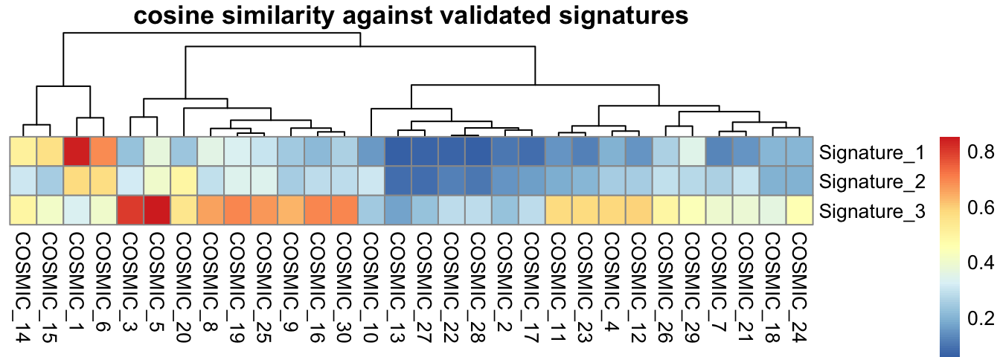
Finally plot signatures
maftools::plotSignatures(nmfRes = laml.sig, title_size = 0.8, sig_db = "SBS")
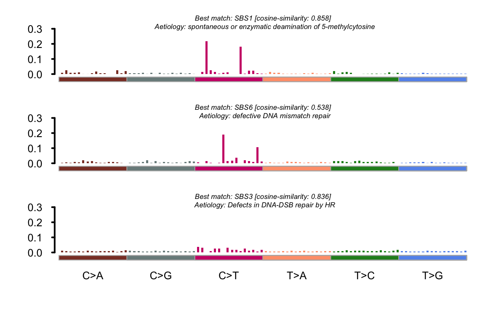
If you fancy 3D barpots, you can install barplot3d package and visualize the results with legoplot3d function.
library("barplot3d") #Visualize first signature sig1 = laml.sig$signatures[,1] barplot3d::legoplot3d(contextdata = sig1, labels = FALSE, scalexy = 0.01, sixcolors = "sanger", alpha = 0.5)
NOTE:
Should you receive an error while running
extractSignaturescomplainingnone of the packages are loaded, please manually load theNMFlibrary and re-run.If either
extractSignaturesorestimateSignaturesstops in between, its possibly due to low mutation counts in the matrix. In that case rerun the functions withpConstantargument set to small positive value (e.g, 0.1).
Signature enrichment analysis
Signatures can further be assigned to samples and enrichment analysis can be performd using signatureEnrichment funtion, which identifies mutations enriched in every signature identified.
laml.se = signatureEnrichment(maf = laml, sig_res = laml.sig)
## Running k-means for signature assignment..## Performing pairwise and groupwise comparisions..## Sample size per factor in Signature:##
## Signature_1 Signature_2 Signature_3
## 60 65 63## Estimating mutation load and signature exposures..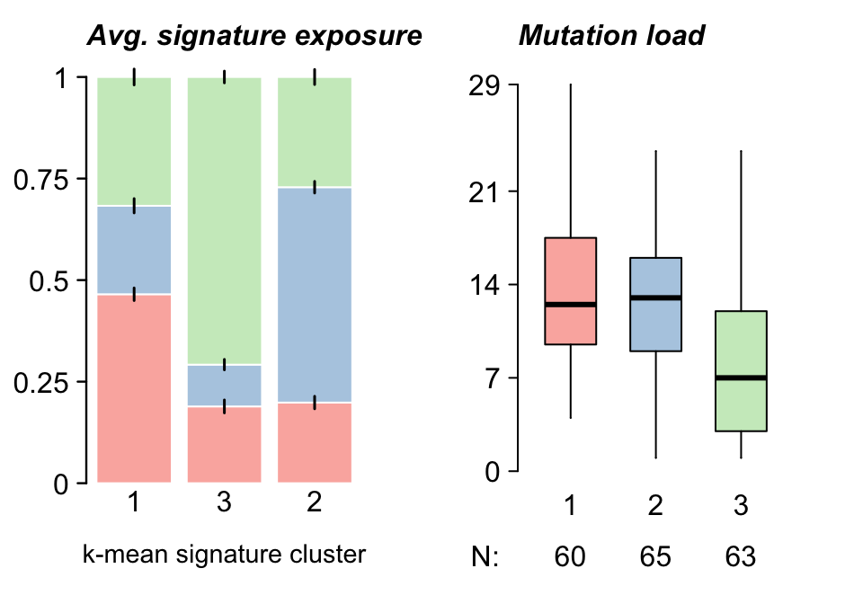
Above results can be visualzied similar to clinical enrichments.
plotEnrichmentResults(enrich_res = laml.se, pVal = 0.05)
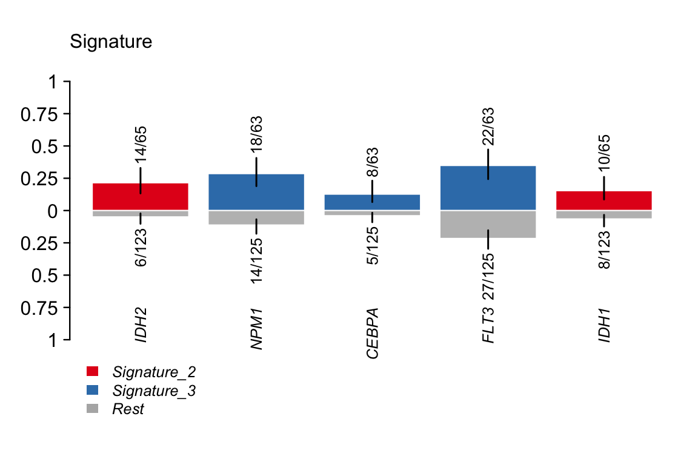
Variant Annotations
Converting annovar output to MAF
Annovar is one of the most widely used Variant Annotation tool in Genomics 17. Annovar output is generally in a tabular format with various annotation columns. This function converts such annovar output files into MAF. This function requires that annovar was run with gene based annotation as a first operation, before including any filter or region based annotations.
e.g,
table_annovar.pl example/ex1.avinput humandb/ -buildver hg19 -out myanno -remove -protocol (refGene),cytoBand,dbnsfp30a -operation (g),r,f -nastring NAannovarToMaf mainly uses gene based annotations for processing, rest of the annotation columns from input file will be attached to the end of the resulting MAF.
As an example we will annotate the same file which was used above to run oncotate function. We will annotate it using annovar with the following command. For simplicity, here we are including only gene based annotations but one can include as many annotations as they wish. But make sure the fist operation is always gene based annotation.
$perl table_annovar.pl variants.tsv ~/path/to/humandb/ -buildver hg19
-out variants --otherinfo -remove -protocol ensGene -operation g -nastring NAOutput generated is stored as a part of this package. We can convert this annovar output into MAF using annovarToMaf.
var.annovar = system.file("extdata", "variants.hg19_multianno.txt", package = "maftools") var.annovar.maf = annovarToMaf(annovar = var.annovar, Center = 'CSI-NUS', refBuild = 'hg19', tsbCol = 'Tumor_Sample_Barcode', table = 'ensGene')
## -Reading annovar files
## -Processing Exonic variants
## --Adding Variant_Classification
## --Parsing aa-change
## -Processing Non-exonic variants
## --Adding Variant_Classification
## -Adding Variant_Type
## -Converting Ensemble Gene IDs into HGNC gene symbols
## --Done. Original ensemble gene IDs are preserved under field name ens_id
## Finished in 0.128s elapsed (0.115s cpu)Annovar, when used with Ensemble as a gene annotation source, uses ensemble gene IDs as Gene names. In that case, use annovarToMaf with argument table set to ensGene which converts ensemble gene IDs into HGNC symbols.
Converting ICGC Simple Somatic Mutation Format to MAF
Just like TCGA, International Cancer Genome Consortium ICGC also makes its data publicly available. But the data are stored in Simpale Somatic Mutation Format, which is similar to MAF format in its structure. However field names and classification of variants is different from that of MAF. icgcSimpleMutationToMAF is a function which reads ICGC data and converts them to MAF.
#Read sample ICGC data for ESCA esca.icgc <- system.file("extdata", "simple_somatic_mutation.open.ESCA-CN.sample.tsv.gz", package = "maftools") esca.maf <- icgcSimpleMutationToMAF(icgc = esca.icgc, addHugoSymbol = TRUE)
## Converting Ensemble Gene IDs into HGNC gene symbols.## Done! Original ensemble gene IDs are preserved under field name ens_id## --Removed 427 duplicated variants#Printing first 16 columns for display convenience. print(esca.maf[1:5,1:16, with = FALSE])
## Hugo_Symbol Entrez_Gene_Id Center NCBI_Build Chromosome Start_Position
## 1: AC005237.4 NA NA GRCh37 2 241987787
## 2: AC061992.1 786 NA GRCh37 17 76425382
## 3: AC097467.2 NA NA GRCh37 4 156294567
## 4: ADAMTS12 NA NA GRCh37 5 33684019
## 5: AL589642.1 54801 NA GRCh37 9 32630154
## End_Position Strand Variant_Classification Variant_Type Reference_Allele
## 1: 241987787 + Intron SNP C
## 2: 76425382 + 3'Flank SNP C
## 3: 156294567 + Intron SNP A
## 4: 33684019 + Missense_Mutation SNP A
## 5: 32630154 + RNA SNP T
## Tumor_Seq_Allele1 Tumor_Seq_Allele2 dbSNP_RS dbSNP_Val_Status
## 1: C T NA NA
## 2: C T NA NA
## 3: A G NA NA
## 4: A C NA NA
## 5: T C NA NA
## Tumor_Sample_Barcode
## 1: SA514619
## 2: SA514619
## 3: SA514619
## 4: SA514619
## 5: SA514619Note that by default Simple Somatic Mutation format contains all affected transcripts of a variant resulting in multiple entries of the same variant in same sample. It is hard to choose a single affected transcript based on annotations alone and by default this program removes repeated variants as duplicated entries. If you wish to keep all of them, set removeDuplicatedVariants to FALSE. Another option is to convert input file to MAF by removing duplicates and then use scripts like vcf2maf to re-annotate and prioritize affected transcripts.
Prepare MAF file for MutSigCV analysis
MutSig/MutSigCV is most widely used program for detecting driver genes 18. However, we have observed that covariates files (gene.covariates.txt and exome_full192.coverage.txt) which are bundled with MutSig have non-standard gene names (non Hugo_Symbols). This discrepancy between Hugo_Symbols in MAF and non-Hugo_symbols in covariates file causes MutSig program to ignore such genes. For example, KMT2D - a well known driver gene in Esophageal Carcinoma is represented as MLL2 in MutSig covariates. This causes KMT2D to be ignored from analysis and is represented as an insignificant gene in MutSig results. This function attempts to correct such gene symbols with a manually curated list of gene names compatible with MutSig covariates list.
laml.mutsig.corrected = prepareMutSig(maf = laml) # Converting gene names for 1 variants from 1 genes # Hugo_Symbol MutSig_Synonym N # 1: ARHGAP35 GRLF1 1 # Original symbols are preserved under column OG_Hugo_Symbol.
Set operations
Subsetting MAF
We can also subset MAF using function subsetMaf
#Extract data for samples 'TCGA.AB.3009' and 'TCGA.AB.2933' (Printing just 5 rows for display convenience) subsetMaf(maf = laml, tsb = c('TCGA-AB-3009', 'TCGA-AB-2933'), mafObj = FALSE)[1:5]
## Hugo_Symbol Entrez_Gene_Id Center NCBI_Build Chromosome
## 1: ABCB11 8647 genome.wustl.edu 37 2
## 2: ACSS3 79611 genome.wustl.edu 37 12
## 3: ANK3 288 genome.wustl.edu 37 10
## 4: AP1G2 8906 genome.wustl.edu 37 14
## 5: ARC 23237 genome.wustl.edu 37 8
## Start_Position End_Position Strand Variant_Classification Variant_Type
## 1: 169780250 169780250 + Missense_Mutation SNP
## 2: 81536902 81536902 + Missense_Mutation SNP
## 3: 61926581 61926581 + Splice_Site SNP
## 4: 24033309 24033309 + Missense_Mutation SNP
## 5: 143694874 143694874 + Missense_Mutation SNP
## Reference_Allele Tumor_Seq_Allele1 Tumor_Seq_Allele2 Tumor_Sample_Barcode
## 1: G G A TCGA-AB-3009
## 2: C C T TCGA-AB-3009
## 3: C C A TCGA-AB-3009
## 4: C C T TCGA-AB-3009
## 5: C C G TCGA-AB-3009
## Protein_Change i_TumorVAF_WU i_transcript_name
## 1: p.A1283V 46.97218 NM_003742.2
## 2: p.A266V 47.32510 NM_024560.2
## 3: 43.99478 NM_020987.2
## 4: p.R346Q 47.08000 NM_003917.2
## 5: p.W253C 42.96435 NM_015193.3##Same as above but return output as an MAF object (Default behaviour) subsetMaf(maf = laml, tsb = c('TCGA-AB-3009', 'TCGA-AB-2933'))
## An object of class MAF
## ID summary Mean Median
## 1: NCBI_Build 37 NA NA
## 2: Center genome.wustl.edu NA NA
## 3: Samples 2 NA NA
## 4: nGenes 34 NA NA
## 5: Frame_Shift_Ins 5 2.5 2.5
## 6: In_Frame_Ins 1 0.5 0.5
## 7: Missense_Mutation 26 13.0 13.0
## 8: Nonsense_Mutation 2 1.0 1.0
## 9: Splice_Site 1 0.5 0.5
## 10: total 35 17.5 17.5Specifying queries and controlling output fields.
#Select all Splice_Site mutations from DNMT3A and NPM1 subsetMaf(maf = laml, genes = c('DNMT3A', 'NPM1'), mafObj = FALSE,query = "Variant_Classification == 'Splice_Site'")
## Hugo_Symbol Entrez_Gene_Id Center NCBI_Build Chromosome
## 1: DNMT3A 1788 genome.wustl.edu 37 2
## 2: DNMT3A 1788 genome.wustl.edu 37 2
## 3: DNMT3A 1788 genome.wustl.edu 37 2
## 4: DNMT3A 1788 genome.wustl.edu 37 2
## 5: DNMT3A 1788 genome.wustl.edu 37 2
## 6: DNMT3A 1788 genome.wustl.edu 37 2
## Start_Position End_Position Strand Variant_Classification Variant_Type
## 1: 25459874 25459874 + Splice_Site SNP
## 2: 25467208 25467208 + Splice_Site SNP
## 3: 25467022 25467022 + Splice_Site SNP
## 4: 25459803 25459803 + Splice_Site SNP
## 5: 25464576 25464576 + Splice_Site SNP
## 6: 25469029 25469029 + Splice_Site SNP
## Reference_Allele Tumor_Seq_Allele1 Tumor_Seq_Allele2 Tumor_Sample_Barcode
## 1: C C G TCGA-AB-2818
## 2: C C T TCGA-AB-2822
## 3: A A G TCGA-AB-2891
## 4: A A C TCGA-AB-2898
## 5: C C A TCGA-AB-2934
## 6: C C A TCGA-AB-2968
## Protein_Change i_TumorVAF_WU i_transcript_name
## 1: p.R803S 36.84 NM_022552.3
## 2: 62.96 NM_022552.3
## 3: 34.78 NM_022552.3
## 4: 46.43 NM_022552.3
## 5: p.G646V 37.50 NM_022552.3
## 6: p.E477* 40.00 NM_022552.3#Same as above but include only 'i_transcript_name' column in the output subsetMaf(maf = laml, genes = c('DNMT3A', 'NPM1'), mafObj = FALSE, query = "Variant_Classification == 'Splice_Site'", fields = 'i_transcript_name')
## Hugo_Symbol Chromosome Start_Position End_Position Reference_Allele
## 1: DNMT3A 2 25459874 25459874 C
## 2: DNMT3A 2 25467208 25467208 C
## 3: DNMT3A 2 25467022 25467022 A
## 4: DNMT3A 2 25459803 25459803 A
## 5: DNMT3A 2 25464576 25464576 C
## 6: DNMT3A 2 25469029 25469029 C
## Tumor_Seq_Allele2 Variant_Classification Variant_Type Tumor_Sample_Barcode
## 1: G Splice_Site SNP TCGA-AB-2818
## 2: T Splice_Site SNP TCGA-AB-2822
## 3: G Splice_Site SNP TCGA-AB-2891
## 4: C Splice_Site SNP TCGA-AB-2898
## 5: A Splice_Site SNP TCGA-AB-2934
## 6: A Splice_Site SNP TCGA-AB-2968
## i_transcript_name
## 1: NM_022552.3
## 2: NM_022552.3
## 3: NM_022552.3
## 4: NM_022552.3
## 5: NM_022552.3
## 6: NM_022552.3Subsetting by clinical data
Use clinQuery argument in subsetMaf to select samples of interest based on their clinical features.
#Select all samples with FAB clasification M4 in clinical data laml_m4 = subsetMaf(maf = laml, clinQuery = "FAB_classification %in% 'M4'")
## -subsetting by clinical data..## --39 samples meet the clinical queryPre-compiled TCGA MAF objects
There is also an R data package containing pre-compiled TCGA MAF objects from TCGA firehose and TCGA MC3 projects, particularly helpful for those working with TCGA mutation data. Every dataset is stored as an MAF object containing somatic mutations along with clinical information. Due to Bioconductor package size limits and other difficulties, this was not submitted to Bioconductor. However, you can still download TCGAmutations package from GitHub.
devtools::install_github(repo = "PoisonAlien/TCGAmutations")
References
- Cancer Genome Atlas Research, N. Genomic and epigenomic landscapes of adult de novo acute myeloid leukemia. N Engl J Med 368, 2059-74 (2013).
- Mermel, C.H. et al. GISTIC2.0 facilitates sensitive and confident localization of the targets of focal somatic copy-number alteration in human cancers. Genome Biol 12, R41 (2011).
- Olshen, A.B., Venkatraman, E.S., Lucito, R. & Wigler, M. Circular binary segmentation for the analysis of array-based DNA copy number data. Biostatistics 5, 557-72 (2004).
- Alexandrov, L.B. et al. Signatures of mutational processes in human cancer. Nature 500, 415-21 (2013).
- Tamborero, D., Gonzalez-Perez, A. & Lopez-Bigas, N. OncodriveCLUST: exploiting the positional clustering of somatic mutations to identify cancer genes. Bioinformatics 29, 2238-44 (2013).
- Dees, N.D. et al. MuSiC: identifying mutational significance in cancer genomes. Genome Res 22, 1589-98 (2012).
- Lawrence MS, Stojanov P, Mermel CH, Robinson JT, Garraway LA, Golub TR, Meyerson M, Gabriel SB, Lander ES, Getz G: Discovery and saturation analysis of cancer genes across 21 tumour types. Nature 2014, 505:495-501.
- Griffith, M., Griffith, O. L., Coffman, A. C., Weible, J. V., McMichael, J. F., Spies, N. C., … Wilson, R. K. (2013). DGIdb - Mining the druggable genome. Nature Methods, 10(12), 1209–1210. http://doi.org/10.1038/nmeth.2689
- Sanchez-Vega F, Mina M, Armenia J, Chatila WK, Luna A, La KC, Dimitriadoy S, Liu DL, Kantheti HS, Saghafinia S et al. 2018. Oncogenic Signaling Pathways in The Cancer Genome Atlas. Cell 173: 321-337 e310
- Madan, V. et al. Comprehensive mutational analysis of primary and relapse acute promyelocytic leukemia. Leukemia 30, 1672-81 (2016).
- Mroz, E.A. & Rocco, J.W. MATH, a novel measure of intratumor genetic heterogeneity, is high in poor-outcome classes of head and neck squamous cell carcinoma. Oral Oncol 49, 211-5 (2013).
- Roberts SA, Lawrence MS, Klimczak LJ, et al. An APOBEC Cytidine Deaminase Mutagenesis Pattern is Widespread in Human Cancers. Nature genetics. 2013;45(9):970-976.
- Gaujoux, R. & Seoighe, C. A flexible R package for nonnegative matrix factorization. BMC Bioinformatics 11, 367 (2010).
- Welch, J.S. et al. The origin and evolution of mutations in acute myeloid leukemia. Cell 150, 264-78 (2012).
- Ramos, A.H. et al. Oncotator: cancer variant annotation tool. Hum Mutat 36, E2423-9 (2015).
- Wang, K., Li, M. & Hakonarson, H. ANNOVAR: functional annotation of genetic variants from high-throughput sequencing data. Nucleic Acids Res 38, e164 (2010).
- Lawrence MS, Stojanov P, Polak P, Kryukov GV, Cibulskis K, Sivachenko A, Carter SL, Stewart C, Mermel CH, Roberts SA, et al: Mutational heterogeneity in cancer and the search for new cancer-associated genes. Nature 2013, 499:214-218.
Session Info
## R version 4.0.2 (2020-06-22)
## Platform: x86_64-apple-darwin17.0 (64-bit)
## Running under: macOS Catalina 10.15.6
##
## Matrix products: default
## BLAS: /Library/Frameworks/R.framework/Versions/4.0/Resources/lib/libRblas.dylib
## LAPACK: /Library/Frameworks/R.framework/Versions/4.0/Resources/lib/libRlapack.dylib
##
## locale:
## [1] en_US.UTF-8/en_US.UTF-8/en_US.UTF-8/C/en_US.UTF-8/en_US.UTF-8
##
## attached base packages:
## [1] stats4 parallel stats graphics grDevices utils datasets
## [8] methods base
##
## other attached packages:
## [1] pheatmap_1.0.12 doParallel_1.0.15
## [3] iterators_1.0.12 foreach_1.5.0
## [5] NMF_0.23.0 Biobase_2.48.0
## [7] cluster_2.1.0 rngtools_1.5
## [9] pkgmaker_0.31.1 registry_0.5-1
## [11] BSgenome.Hsapiens.UCSC.hg19_1.4.3 BSgenome_1.56.0
## [13] rtracklayer_1.48.0 Biostrings_2.56.0
## [15] XVector_0.28.0 GenomicRanges_1.40.0
## [17] GenomeInfoDb_1.24.2 IRanges_2.22.2
## [19] S4Vectors_0.26.1 BiocGenerics_0.34.0
## [21] mclust_5.4.6 maftools_2.4.10
##
## loaded via a namespace (and not attached):
## [1] splines_4.0.2 R.utils_2.9.2
## [3] assertthat_0.2.1 GenomeInfoDbData_1.2.3
## [5] Rsamtools_2.4.0 yaml_2.2.1
## [7] pillar_1.4.6 backports_1.1.8
## [9] lattice_0.20-41 glue_1.4.1
## [11] digest_0.6.25 RColorBrewer_1.1-2
## [13] colorspace_1.4-1 plyr_1.8.6
## [15] htmltools_0.5.0 Matrix_1.2-18
## [17] R.oo_1.23.0 pkgconfig_2.0.3
## [19] XML_3.99-0.5 bibtex_0.4.2.2
## [21] zlibbioc_1.34.0 purrr_0.3.4
## [23] xtable_1.8-4 scales_1.1.1
## [25] BiocParallel_1.22.0 tibble_3.0.3
## [27] generics_0.0.2 ggplot2_3.3.2
## [29] ellipsis_0.3.1 withr_2.2.0
## [31] SummarizedExperiment_1.18.2 survival_3.2-3
## [33] magrittr_1.5 crayon_1.3.4
## [35] memoise_1.1.0 evaluate_0.14
## [37] R.methodsS3_1.8.0 fs_1.5.0
## [39] MASS_7.3-51.6 tools_4.0.2
## [41] data.table_1.13.0 gridBase_0.4-7
## [43] lifecycle_0.2.0 matrixStats_0.56.0
## [45] stringr_1.4.0 munsell_0.5.0
## [47] DelayedArray_0.14.1 compiler_4.0.2
## [49] pkgdown_1.5.1 rlang_0.4.7
## [51] grid_4.0.2 RCurl_1.98-1.2
## [53] rstudioapi_0.11 bitops_1.0-6
## [55] rmarkdown_2.3 gtable_0.3.0
## [57] codetools_0.2-16 reshape2_1.4.4
## [59] R6_2.4.1 GenomicAlignments_1.24.0
## [61] dplyr_1.0.1 knitr_1.29
## [63] rprojroot_1.3-2 desc_1.2.0
## [65] stringi_1.4.6 Rcpp_1.0.5
## [67] vctrs_0.3.2 tidyselect_1.1.0
## [69] xfun_0.16Support and acknowledgements
Github
If you have any issues, bug reports or feature requests please feel free to raise an issue on GitHub page.
Acknowledgements
- Thanks to Shixiang Wang for many bug fixes, improvements, feature requests, and contribution to overall package maintenance
- Thanks to Ryan Morin for crucial bug fixes
- Thanks to Peter Ellis for beautiful markdown template
-
somaticInteractionsplot is inspired from the article Combining gene mutation with gene expression data improves outcome prediction in myelodysplastic syndromes. Thanks to authors for making source code available.